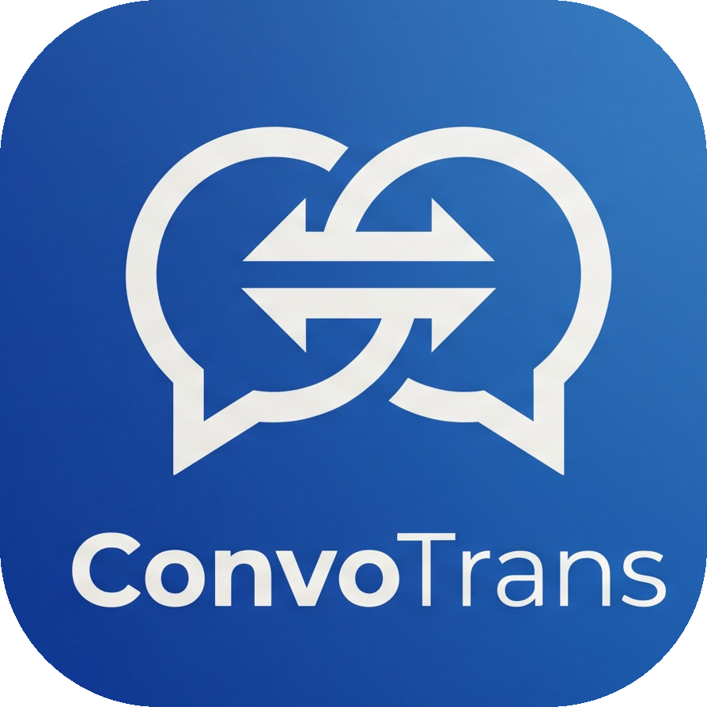

ConvoTransLast updated: June 15, 2026
ConvoTrans ("the app") is a real-time conversation translator. This policy explains what data the app handles and how. We collect as little as possible, and we do not sell your data.
Your conversations, settings, and any API key are stored only on your own device (in your browser's local storage). We do not host accounts and do not keep a copy of your conversations on our servers. Clearing your browser data, or removing the app, deletes them.
To translate text and generate reply suggestions, the text you enter is sent to the Anthropic Claude API through our secure proxy, processed, and the result is returned to your device. The text is used only to produce that response and is not used to store your conversations or to train models. See Anthropic's privacy policy.
If you use voice input, your speech is converted to text by your device/browser's built-in speech recognition. The app does not record or store audio.
The app does not use advertising or third-party tracking, and does not build a profile of you.
If you choose to enter your own Anthropic API key, it is stored only in your browser on this device and is sent only to Anthropic to perform your translations. You can remove it any time in Settings.
The app contains no objectionable content and is suitable for a general audience of all ages. It requires no account and keeps your data on your own device. We recommend that younger children use it with adult guidance.
We may update this policy; the "last updated" date will change accordingly.
Questions? Contact jryu@krafton.com.
최종 업데이트: 2026년 6월 15일
ConvoTrans('본 앱')는 실시간 대화 번역기입니다. 본 방침은 앱이 어떤 정보를 어떻게 다루는지 설명합니다. 저희는 최소한의 정보만 처리하며, 이용자의 데이터를 판매하지 않습니다.
대화·설정·API 키는 오직 이용자 본인의 기기(브라우저 로컬 저장소)에만 저장됩니다. 저희는 계정을 운영하지 않으며 이용자의 대화를 서버에 보관하지 않습니다. 브라우저 데이터를 지우거나 앱을 삭제하면 함께 삭제됩니다.
텍스트 번역과 답변 제안을 위해, 입력한 텍스트는 보안 프록시를 거쳐 Anthropic Claude API로 전송·처리된 뒤 결과가 기기로 반환됩니다. 해당 텍스트는 그 응답을 생성하는 데에만 사용되며, 대화 보관이나 모델 학습에는 사용되지 않습니다. 자세한 내용은 Anthropic 개인정보 처리방침을 참고하세요.
음성 입력을 사용하는 경우, 음성은 기기/브라우저의 내장 음성 인식 기능으로 텍스트로 변환됩니다. 앱은 오디오를 녹음하거나 저장하지 않습니다.
앱은 광고나 제3자 추적을 사용하지 않으며, 이용자 프로필을 만들지 않습니다.
본인 Anthropic API 키를 입력하는 경우, 키는 이 기기의 브라우저에만 저장되며 번역 수행을 위해 Anthropic에만 전송됩니다. 설정에서 언제든 제거할 수 있습니다.
본 앱은 유해한 콘텐츠가 없으며 연령 제한 없이 누구나 이용할 수 있습니다. 계정이 필요 없고 데이터는 이용자 본인의 기기에만 저장됩니다. 다만 어린 아동은 보호자의 지도 아래 사용하실 것을 권장합니다.
본 방침은 변경될 수 있으며, 변경 시 '최종 업데이트' 날짜가 갱신됩니다.
문의: jryu@krafton.com